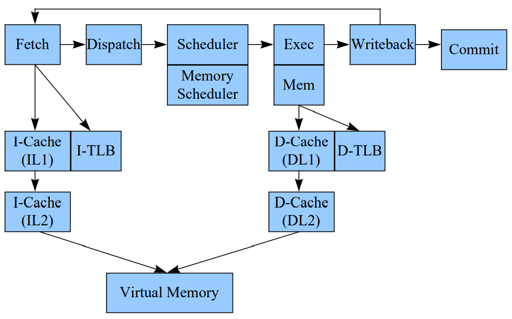

simpleScalar解析¶

官方网站[http://www.simplescalar.com]
SimpleScalar simultor 是一款简约的模拟器框架,给人一种麻雀虽小五脏俱全的感觉。最后一版是2003年8月份release到3V0d版本,现在应该已经没人继续维护了。simplescalar的描述中提到了，它不是免费的，需要购买license,但实际上代码是能完整拿到的。
概述¶
simplesaclar中实现了两个arch，alpha和pisa，实现了7个CPU,总文件大小只有3.18MB, 用了4600行就实现了一个outorder CPU。所以simplescalar是一个很精简的CPU模拟器，它很适合做一些时间紧，任务重，微架构又不标准的CPU模拟器开发。
-------------------- ------------------ -------------------
| target-alpha | | target-pisa | | target .... |
-------------------- ------------------ | custom define |
| | -------------------
| | |
|----------------------------> | <----------------------------|
| each arch must implement these interfaces
V
----------------------------
| ecoff.h | define elf file fmt
| loader.c | for load elf file
| machine.c/.h | about arch
| machine.def | insts define
| symbol.c | for analyze symbol in elf file
| syscall.c | for system call
----------------------------
|
---------------------------------------|-----------------------------------------------------------------------------
| | | | | | |
V V V V V V V
-------------- -------------- ------------- ---------------- ---------------- ---------------- ------------
| sim-bpred | | sim-cache | | sim-eio | | sim-fast | | sim-outorder | | sim-profile | | sim-safe |
-------------- -------------- ------------- ---------------- ---------------- ---------------- ------------
**********************************************************************************************************************************
important module
================= ================== =================== ================= =================
| Dlite | | Memory | | option | | statistic | | register |
================= ================== =================== ================= =================
上面是SimpleScalar的简要框图， 关于它的文档，在代码包中也有《hack_guide.pdf》对整个代码架构做详细的描述。 simpleScalar几乎具备了上面列出的所有模拟器要点，虽然很多要点实现的没有gem5那么完善，但代码足够简单易懂，整个开发周期不会太长。 它没有实现一个统一的log系统，但实现了一系列的xxx_dump()函数来输出各个模块的状态log。总而言之，麻雀虽小，五脏俱全。
模块解析¶
一款成熟的模拟器框架，应该具备如下的功能点
- 指令集管理系统(解码，行为，反汇编， 异常)
- 寄存器管理系统
- 多指令集架构支持(应该要保持指令集架构与CPU的分离)
- 多种CPU实现
- 多种微结构实现(或微结构参数化)
- 单步和交互调试模式
- log及trace系统
- 模拟器参数解析管理系统
- 计数器管理系统
- 总线及内存管理系统
- 系统调用支持
指令集管理¶
#define LDA_IMPL {SET_GPR(RA, GPR(RB) + SEXT(OFS));}
DEFINST(LDA, 0x08, "lda", "a,o(b)", IntALU, F_ICOMP, DGPR(RA), DNA, DNA, DGPR(RB), DNA)
如上简单的描述就定义了一条指令。包含了指令的行为，decode, 反汇编，运算单元的指定，指令flag，寄存器依赖。 回想一下，spike要添加一条指令，需要添加一个指令行为文件，添加指令编码到encoding文件，添加反汇编信息到反汇编文件，gem5添加一条指令，要符合模板，如果不符合模板工作量也会比较大。 相比之下，simpleScalar这种指令管理方式最为简单直接。
寄存器管理¶
simpleScalar在寄存器管理方面没有做太多工作，寄存器的使用也很直接。 同样一个General purpose register, 需要在不同的CPU实现里去对该寄存器的使用做一些封装
sim-outorder对GPR的封装
#define GPR(N) (BITMAP_SET_P(use_spec_R, R_BMAP_SZ, (N)) \
? spec_regs_R[N] \
: regs.regs_R[N])
sim-safe对GPR的封装
#define GPR(N) (regs.regs_R[N])
多指令集架构支持¶
simpleScalar 支持alpha和pisa架构，支持其他架构需要自己添加和调试，这次使用时，添加了自定义的指令集架构，整个过程进度很快。 实现时基本只需要添加三个部分就能支持一套新的指令集架构
- 增加target-xxxx目录，并实现目录下的所有文件
- 在想要调试的CPU文件中添加寄存器和内存访问宏定义
- 在makefile中添加相应的编译规则
多种CPU实现¶
simpleScalar实现了7个CPU，其中sim-safe, sim-fast是功能模型，sim-outorder是乱序多发射CPU， 后续也会主要针对sim-outorder进行分析。

多种微架构实现¶
sim-outorder实现了主要微结构的参数化，这是基于其config子系统实现的。配置可以通过命令行或者配置文件的形式输入到模型中。得益于统一的配置参数 模块，所有注册的参数都能在命令行下看到。
单步和交互调试¶
单步和交互调试对于功能模型来讲是一个很好的功能，它能够有效的帮助调试指令流。就像spike也支持-d模式一样。
log及trace系统¶
比如sim-outorder实现了一系列的xxx_dump()函数来输出各个模块的状态,能够通过pipeview.pl有一个比较直观的流水线简图。但目前我认为，通过解析log，生成 google trace能够识别的json文件是一种更加直观的方式。
模拟器参数管理系统¶
通过opt_reg_xxx()可以注册系统参数，这些函数都在options.c/h 中
计数器管理系统¶
log和计数器是模拟器的两大输出点，通过log可以分析流水线，通过计数器可以获得性能指标。stats.c/h中实现了注册计数器的函数
总线及内存管理¶
simpleScalar不支持总线，只有一个memory管理，其使用了基于一级页表的memory管理方式。这种方法也挺简洁高效，缺点是不支持外设。 并在同一个index，不同tag的情况下，使用链表来管理同一个index的页，并通过改变链表顺序来提高一些效率。
--------------------------------------------------------------------------
| tag | index | PAGE |
--------------------------------------------------------------------------
63 26 12 0
outorder CPU¶
重点分析一下乱序CPU模型

整个simplescalar的乱序模型都是围绕RUU(Register Update Unit)进行的，这也符合实际的乱序CPU设计核心: 只有控制住了寄存器依赖，才能保证最终结果的正确。 simpleScalar实现的乱序CPU，仍然是以计算节拍为主要手段的模拟器。像gem5的O3 CPU, 可以认为执行是真的在FU中进行执行的，但simplescalar是在dispatch阶段就完成了指令的执行。 simplescalar这种做法很显然降低了实现难度，精度也会差一些，也没法通过指令执行结果来推断乱序实现的方案是否可靠。
________________
| | 由于采用了仅计算周期的方式，
| | icache 因此icahce和itlb是无法在数据流上体现的
|______________|
__________________________________________________________|_______________________________________________________
______ruu_fetch_issue_delay_______________________________|_______________________________________________________
|
fetch_tail | inst
| get a global inst seq
(fetch_num + 1) % ruu_ifq_size V
_________________________________________________________________________
fetch: |________|________|________|________|________|________|________|________| fetch_data[ruu_ifq_size]
| \ /
| \___________ fetch_num ________________/
fetch_head |
| 使用 RUU_num LSQ_num 进行控制，反压到 fetch_num
---------------------------------
dispatch: | 对于load/store指令，需要拆分一个用于地址计算的op到ALU中，标记ea_comp
___________ | 并依赖这个op的计算结果 ____________
|_________| | |__________|
RUU_head-----------|_________| | (LSQ_num + 1) % LSQ_size |__________| LSQ_head
| |_________| | |__________|-----------------
| |_________| RUU_num | LSQ_tail |__________| |
| |_________| |--------------------------> |__________| LSQ_num |
| |_________| <----------------| |__________| |
| |_________| (RUU_tail + 1) % RUU_size |__________| |
| |_________| |__________| |
| |_________| LSQ[LSQ_size] struct RUU_station |
| |_________| for load/store instsregisters depend |
| RUU[RUU_size] struct RUU_station set in_LSQ = TRUE for whether is a ld/st |
| for registers depend |
| ______________________________ |
| ------------------------------------- | created addr op write back | <------|
| | operands ready |____________________________| store |
|-------------- | ______________________________ |
ctrl or longlat inst | | -------------------------------- | no old store with same addr| |
push to the queue head | | | operands ready |____________________________| <------|
| | | load
| | | if operands ready in dispatch stage, push to ready_queue directly.
| | | store op push to ready_queue in writeback stage
| | | load op push to ready_queue in lsq_refresh
__________________________V______V____V__
|_____|_____|_____|_____|_____|_____|_____| ready_queue(struct RS_link)
| | point to RUU_station
issue: | issue_width |
| |
__|_________________|_______________________________________________________
__|_issue latency___|_______________________________________________________
| | each fu has a issue_lat to control the busy of the fu
| |------------------------------------
| |
|------------------------------------ |
| |
________________________________________V_________________V_
|_____|_____|______|_____|_____|_____|_____|_____|_____|_____| point to RUU_station
event_queue(struct RS_link)
writeback:
__________________________________________________________________________________________
_____op latency___________________________________________________________________________
each op in event_queue will complete in sim_cycle + op_lat
if an op complete, update all op in idep_list, any op operands ready, dispatch to ready_queue
commit:
free RUU for not ea_comp insts
free RUU and send store to memory for store insts
寄存器依赖¶
寄存器依赖是sim-outorder实现的核心, 在实现时，抽象了register update unit来管理寄存器依赖，整个乱序的功能是靠 RUU来保证的。
RUU不仅承担了标记寄存器依赖的工作，还承担了ROB的工作。在dispatch阶段，fetch_data中的指令按照顺序绑定RUU,在commit阶段， 如果RUU_head中记录的指令没有complete，后面的指令都无法commit
同时，对于speculative execution, simplesim还提供了use_spec_cv 和 spec_create_vector来快速恢复寄存器依赖到错误的分支之前。 以4个RUU举例说明
__________ 0 0 0 0 0 0 1
| | ________________________________________________
add r2, r0, r1 | RUU0 | |__r0__|__r1__|__r2__|__r3__|__r4__|__r5__|__r6__| use_spec_cv
|__________|
| |
sub r3, r2, r1 | RUU1 |
|__________|
| | RUU0 RUU1
bnez r3, off | RUU2 | ________________________________________________
|__________| |__r0__|__r1__|__r2__|__r3__|__r4__|__r5__|__r6__| creat_vector
| |
mul r6, r0, r1 | RUU3 | .spec_mode=TRUE
|__________|
RUU3
________________________________________________
|__r0__|__r1__|__r2__|__r3__|__r4__|__r5__|__r6__| spec_creat_vector
假设有四条指令，第三条为分支指令，假设分支预测notaken, 所以speculative执行指令4, 这时候，启用spec_creat_vector来记录寄存器依赖 并且将对应的use_spec_cv中的标志位置1。加入分支预测错误，要恢复，那么就需要按照指令顺序去遍历RUU。但其实无法快速的从RUU获取到 对应的creat_vector,所以直接通过清除整个use_spec_cv来达到快速清除寄存器依赖的目的。
simpleScalar因为仅仅是时序模拟，所有指令在dispatch阶段就执行完成了。因此在dispatch阶段就知道分支预测是否错误。分支预测错误的时候 才会开启spec_mode, 并且stall整个dispatch过程。
Load指令的处理¶
store指令的处理¶
dispatch: tire to RUU